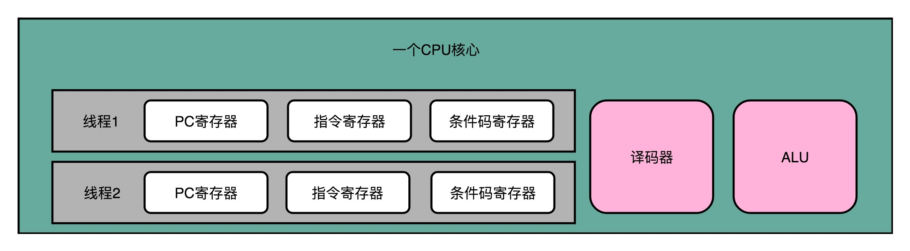
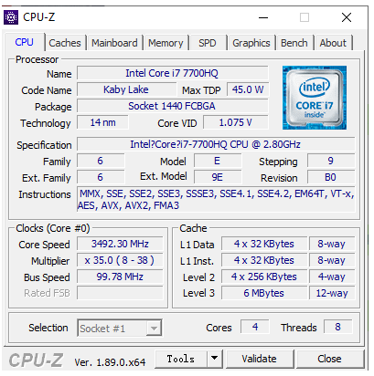
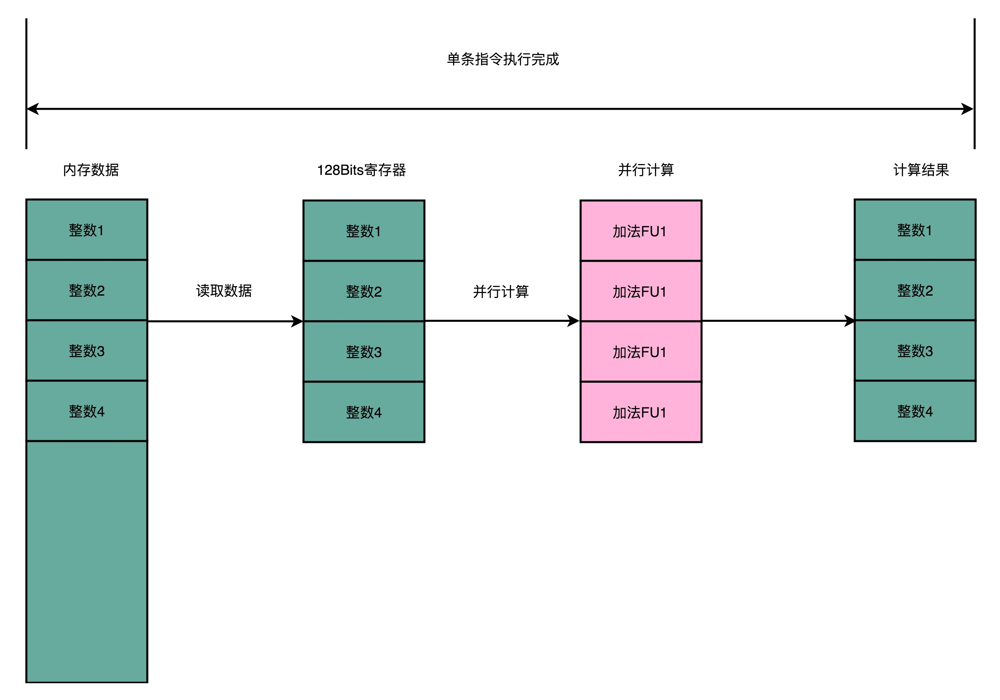

- 00 开篇词 为什么你需要学习计算机组成原理？.md
- 01 冯·诺依曼体系结构：计算机组成的金字塔.md
- 02 给你一张知识地图，计算机组成原理应该这么学.md
- 03 通过你的CPU主频，我们来谈谈“性能”究竟是什么？.md
- 04 穿越功耗墙，我们该从哪些方面提升“性能”？.md
- 05 计算机指令：让我们试试用纸带编程.md
- 06 指令跳转：原来if...else就是goto.md
- 07 函数调用：为什么会发生stack overflow？.md
- 08 ELF和静态链接：为什么程序无法同时在Linux和Windows下运行？.md
- 09 程序装载：“640K内存”真的不够用么？.md
- 10 动态链接：程序内部的“共享单车”.md
- 11 二进制编码：“手持两把锟斤拷，口中疾呼烫烫烫”？.md
- 12 理解电路：从电报机到门电路，我们如何做到“千里传信”？.md
- 13 加法器：如何像搭乐高一样搭电路（上）？.md
- 14 乘法器：如何像搭乐高一样搭电路（下）？.md
- 15 浮点数和定点数（上）：怎么用有限的Bit表示尽可能多的信息？.md
- 16 浮点数和定点数（下）：深入理解浮点数到底有什么用？.md
- 17 建立数据通路（上）：指令加运算=CPU.md
- 18 建立数据通路（中）：指令加运算=CPU.md
- 19 建立数据通路（下）：指令加运算=CPU.md
- 20 面向流水线的指令设计（上）：一心多用的现代CPU.md
- 21 面向流水线的指令设计（下）：奔腾4是怎么失败的？.md
- 22 冒险和预测（一）：hazard是“危”也是“机”.md
- 23 冒险和预测（二）：流水线里的接力赛.md
- 24 冒险和预测（三）：CPU里的“线程池”.md
- 25 冒险和预测（四）：今天下雨了，明天还会下雨么？.md
- 26 Superscalar和VLIW：如何让CPU的吞吐率超过1？.md
- 27 SIMD：如何加速矩阵乘法？.md
- 28 异常和中断：程序出错了怎么办？.md
- 29 CISC和RISC：为什么手机芯片都是ARM？.md
- 30 GPU（上）：为什么玩游戏需要使用GPU？.md
- 31 GPU（下）：为什么深度学习需要使用GPU？.md
- 32 FPGA、ASIC和TPU（上）：计算机体系结构的黄金时代.md
- 33 解读TPU：设计和拆解一块ASIC芯片.md
- 34 理解虚拟机：你在云上拿到的计算机是什么样的？.md
- 35 存储器层次结构全景：数据存储的大金字塔长什么样？.md
- 36 局部性原理：数据库性能跟不上，加个缓存就好了？.md
- 37 理解CPU Cache（上）：“4毫秒”究竟值多少钱？.md
- 38 高速缓存（下）：你确定你的数据更新了么？.md
- 39 MESI协议：如何让多核CPU的高速缓存保持一致？.md
- 40 理解内存（上）：虚拟内存和内存保护是什么？.md
- 41 理解内存（下）：解析TLB和内存保护.md
- 42 总线：计算机内部的高速公路.md
- 43 输入输出设备：我们并不是只能用灯泡显示“0”和“1”.md
- 44 理解IO_WAIT：IO性能到底是怎么回事儿？.md
- 45 机械硬盘：Google早期用过的“黑科技”.md
- 46 SSD硬盘（上）：如何完成性能优化的KPI？.md
- 47 SSD硬盘（下）：如何完成性能优化的KPI？.md
- 48 DMA：为什么Kafka这么快？.md
- 49 数据完整性（上）：硬件坏了怎么办？.md
- 50 数据完整性（下）：如何还原犯罪现场？.md
- 51 分布式计算：如果所有人的大脑都联网会怎样？.md
- 52 设计大型DMP系统（上）：MongoDB并不是什么灵丹妙药.md
- 53 设计大型DMP系统（下）：SSD拯救了所有的DBA.md
- 54 理解Disruptor（上）：带你体会CPU高速缓存的风驰电掣.md
- 55 理解Disruptor（下）：不需要换挡和踩刹车的CPU，有多快？.md
- 结束语 知也无涯，愿你也享受发现的乐趣.md
27 SIMD：如何加速矩阵乘法？
上一讲里呢，我进一步为你讲解了 CPU 里的“黑科技”，分别是超标量（Superscalar）技术和超长指令字（VLIW）技术。
超标量（Superscalar）技术能够让取指令以及指令译码也并行进行；在编译的过程，超长指令字（VLIW）技术可以搞定指令先后的依赖关系，使得一次可以取一个指令包。
不过，CPU 里的各种神奇的优化我们还远远没有说完。这一讲里，我就带你一起来看看，专栏里最后两个提升 CPU 性能的架构设计。它们分别是，你应该常常听说过的超线程（Hyper-Threading）技术，以及可能没有那么熟悉的单指令多数据流（SIMD）技术。
超线程：Intel 多卖给你的那一倍 CPU
不知道你是不是还记得，在第 21 讲，我给你介绍了 Intel 是怎么在 Pentium 4 处理器上遭遇重大失败的。如果不太记得的话，你可以回过头去回顾一下。
那时我和你说过，Pentium 4 失败的一个重要原因，就是它的 CPU 的流水线级数太深了。早期的 Pentium 4 的流水线深度高达 20 级，而后期的代号为 Prescott 的 Pentium 4 的流水线级数，更是到了 31 级。超长的流水线，使得之前我们讲的很多解决“冒险”、提升并发的方案都用不上。
因为这些解决“冒险”、提升并发的方案，本质上都是一种指令级并行（Instruction-level parallelism，简称 IPL）的技术方案。换句话说就是，CPU 想要在同一个时间，去并行地执行两条指令。而这两条指令呢，原本在我们的代码里，是有先后顺序的。无论是我们在流水线里面讲到的流水线架构、分支预测以及乱序执行，还是我们在上一讲说的超标量和超长指令字，都是想要通过同一时间执行两条指令，来提升 CPU 的吞吐率。
然而在 Pentium 4 这个 CPU 上，这些方法都可能因为流水线太深，而起不到效果。我之前讲过，更深的流水线意味着同时在流水线里面的指令就多，相互的依赖关系就多。于是，很多时候我们不得不把流水线停顿下来，插入很多 NOP 操作，来解决这些依赖带来的“冒险”问题。
不知道是不是因为当时面临的竞争太激烈了，为了让 Pentium 4 的 CPU 在性能上更有竞争力一点，2002 年底，Intel 在的 3.06GHz 主频的 Pentium 4 CPU 上，第一次引入了超线程（Hyper-Threading）技术。
什么是超线程技术呢？Intel 想，既然 CPU 同时运行那些在代码层面有前后依赖关系的指令，会遇到各种冒险问题，我们不如去找一些和这些指令完全独立，没有依赖关系的指令来运行好了。那么，这样的指令哪里来呢？自然同时运行在另外一个程序里了。
你所用的计算机，其实同一个时间可以运行很多个程序。比如，我现在一边在浏览器里写这篇文章，后台同样运行着一个 Python 脚本程序。而这两个程序，是完全相互独立的。它们两个的指令完全并行运行，而不会产生依赖问题带来的“冒险”。
然而这个时候，你可能就会觉得奇怪了，这么做似乎不需要什么新技术呀。现在我们用的 CPU 都是多核的，本来就可以用多个不同的 CPU 核心，去运行不同的任务。即使当时的 Pentium 4 是单核的，我们的计算机本来也能同时运行多个进程，或者多个线程。这个超线程技术有什么特别的用处呢？
无论是上面说的多个 CPU 核心运行不同的程序，还是在单个 CPU 核心里面切换运行不同线程的任务，在同一时间点上，一个物理的 CPU 核心只会运行一个线程的指令，所以其实我们并没有真正地做到指令的并行运行。

超线程可不是这样。超线程的 CPU，其实是把一个物理层面 CPU 核心，“伪装”成两个逻辑层面的 CPU 核心。这个 CPU，会在硬件层面增加很多电路，使得我们可以在一个 CPU 核心内部，维护两个不同线程的指令的状态信息。
比如，在一个物理 CPU 核心内部，会有双份的 PC 寄存器、指令寄存器乃至条件码寄存器。这样，这个 CPU 核心就可以维护两条并行的指令的状态。在外面看起来，似乎有两个逻辑层面的 CPU 在同时运行。所以，超线程技术一般也被叫作同时多线程（Simultaneous Multi-Threading，简称 SMT）技术**。**
不过，在 CPU 的其他功能组件上，Intel 可不会提供双份。无论是指令译码器还是 ALU，一个 CPU 核心仍然只有一份。因为超线程并不是真的去同时运行两个指令，那就真的变成物理多核了。超线程的目的，是在一个线程 A 的指令，在流水线里停顿的时候，让另外一个线程去执行指令。因为这个时候，CPU 的译码器和 ALU 就空出来了，那么另外一个线程 B，就可以拿来干自己需要的事情。这个线程 B 可没有对于线程 A 里面指令的关联和依赖。
这样，CPU 通过很小的代价，就能实现“同时”运行多个线程的效果。通常我们只要在 CPU 核心的添加 10% 左右的逻辑功能，增加可以忽略不计的晶体管数量，就能做到这一点。
不过，你也看到了，我们并没有增加真的功能单元。所以超线程只在特定的应用场景下效果比较好。一般是在那些各个线程“等待”时间比较长的应用场景下。比如，我们需要应对很多请求的数据库应用，就很适合使用超线程。各个指令都要等待访问内存数据，但是并不需要做太多计算。
于是，我们就可以利用好超线程。我们的 CPU 计算并没有跑满，但是往往当前的指令要停顿在流水线上，等待内存里面的数据返回。这个时候，让 CPU 里的各个功能单元，去处理另外一个数据库连接的查询请求就是一个很好的应用案例。

我的移动工作站的 CPU 信息
我这里放了一张我的电脑里运行 CPU-Z 的截图。你可以看到，在右下角里，我的 CPU 的 Cores，被标明了是 4，而 Threads，则是 8。这说明我手头的这个 CPU，只有 4 个物理的 CPU 核心，也就是所谓的 4 核 CPU。但是在逻辑层面，它“装作”有 8 个 CPU 核心，可以利用超线程技术，来同时运行 8 条指令。如果你用的是 Windows，可以去下载安装一个CPU-Z来看看你手头的 CPU 里面对应的参数。
SIMD：如何加速矩阵乘法？
在上面的 CPU 信息的图里面，你会看到，中间有一组信息叫作 Instructions，里面写了有 MMX、SSE 等等。这些信息就是这个 CPU 所支持的指令集。这里的 MMX 和 SSE 的指令集，也就引出了我要给你讲的最后一个提升 CPU 性能的技术方案，SIMD，中文叫作单指令多数据流（Single Instruction Multiple Data）。
我们先来体会一下 SIMD 的性能到底怎么样。下面是两段示例程序，一段呢，是通过循环的方式，给一个 list 里面的每一个数加 1。另一段呢，是实现相同的功能，但是直接调用 NumPy 这个库的 add 方法。在统计两段程序的性能的时候，我直接调用了 Python 里面的 timeit 的库。
$ python
>>> import numpy as np
>>> import timeit
>>> a = list(range(1000))
>>> b = np.array(range(1000))
>>> timeit.timeit("[i + 1 for i in a]", setup="from __main__ import a", number=1000000)
32.82800309999993
>>> timeit.timeit("np.add(1, b)", setup="from __main__ import np, b", number=1000000)
0.9787889999997788
>>>
从两段程序的输出结果来看，你会发现，两个功能相同的代码性能有着巨大的差异，足足差出了 30 多倍。也难怪所有用 Python 讲解数据科学的教程里，往往在一开始就告诉你不要使用循环，而要把所有的计算都向量化（Vectorize）。
有些同学可能会猜测，是不是因为 Python 是一门解释性的语言，所以这个性能差异会那么大。第一段程序的循环的每一次操作都需要 Python 解释器来执行，而第二段的函数调用是一次调用编译好的原生代码，所以才会那么快。如果你这么想，不妨试试直接用 C 语言实现一下 1000 个元素的数组里面的每个数加 1。你会发现，即使是 C 语言编译出来的代码，还是远远低于 NumPy。原因就是，NumPy 直接用到了 SIMD 指令，能够并行进行向量的操作。
而前面使用循环来一步一步计算的算法呢，一般被称为SISD，也就是单指令单数据（Single Instruction Single Data）的处理方式。如果你手头的是一个多核 CPU 呢，那么它同时处理多个指令的方式可以叫作MIMD，也就是多指令多数据（Multiple Instruction Multiple Dataa）。
为什么 SIMD 指令能快那么多呢？这是因为，SIMD 在获取数据和执行指令的时候，都做到了并行。一方面，在从内存里面读取数据的时候，SIMD 是一次性读取多个数据。
就以我们上面的程序为例，数组里面的每一项都是一个 integer，也就是需要 4 Bytes 的内存空间。Intel 在引入 SSE 指令集的时候，在 CPU 里面添上了 8 个 128 Bits 的寄存器。128 Bits 也就是 16 Bytes ，也就是说，一个寄存器一次性可以加载 4 个整数。比起循环分别读取 4 次对应的数据，时间就省下来了。

在数据读取到了之后，在指令的执行层面，SIMD 也是可以并行进行的。4 个整数各自加 1，互相之前完全没有依赖，也就没有冒险问题需要处理。只要 CPU 里有足够多的功能单元，能够同时进行这些计算，这个加法就是 4 路同时并行的，自然也省下了时间。
所以，对于那些在计算层面存在大量“数据并行”（Data Parallelism）的计算中，使用 SIMD 是一个很划算的办法。在这个大量的“数据并行”，其实通常就是实践当中的向量运算或者矩阵运算。在实际的程序开发过程中，过去通常是在进行图片、视频、音频的处理。最近几年则通常是在进行各种机器学习算法的计算。
而基于 SIMD 的向量计算指令，也正是在 Intel 发布 Pentium 处理器的时候，被引入的指令集。当时的指令集叫作MMX，也就是 Matrix Math eXtensions 的缩写，中文名字就是矩阵数学扩展。而 Pentium 处理器，也是 CPU 第一次有能力进行多媒体处理。这也正是拜 SIMD 和 MMX 所赐。
从 Pentium 时代开始，我们能在电脑上听 MP3、看 VCD 了，而不用专门去买一块“声霸卡”或者“显霸卡”了。没错，在那之前，在电脑上看 VCD，是需要专门买能够解码 VCD 的硬件插到电脑上去的。而到了今天，通过 GPU 快速发展起来的深度学习技术，也一样受益于 SIMD 这样的指令级并行方案，在后面讲解 GPU 的时候，我们还会遇到它。
总结延伸
这一讲，我们讲完了超线程和 SIMD 这两个 CPU 的“并行计算”方案。超线程，其实是一个“线程级并行”的解决方案。它通过让一个物理 CPU 核心，“装作”两个逻辑层面的 CPU 核心，使得 CPU 可以同时运行两个不同线程的指令。虽然，这样的运行仍然有着种种的限制，很多场景下超线程并不一定能带来 CPU 的性能提升。但是 Intel 通过超线程，让使用者有了“占到便宜”的感觉。同样的 4 核心的 CPU，在有些情况下能够发挥出 8 核心 CPU 的作用。而超线程在今天，也已经成为 Intel CPU 的标配了。
而 SIMD 技术，则是一种“指令级并行”的加速方案，或者我们可以说，它是一种“数据并行”的加速方案。在处理向量计算的情况下，同一个向量的不同维度之间的计算是相互独立的。而我们的 CPU 里的寄存器，又能放得下多条数据。于是，我们可以一次性取出多条数据，交给 CPU 并行计算。
正是 SIMD 技术的出现，使得我们在 Pentium 时代的个人 PC，开始有了多媒体运算的能力。可以说，Intel 的 MMX、SSE 指令集，和微软的 Windows 95 这样的图形界面操作系统，推动了 PC 快速进入家庭的历史进程。
推荐阅读
如果你想看一看 Intel CPU 里面的 SIMD 指令具体长什么样，可以去读一读《计算机组成与设计：硬件 / 软件接口》的 3.7 章节。